Last updated: 2019-09-05
Checks: 6 0
Knit directory: scFLASH/
This reproducible R Markdown analysis was created with workflowr (version 1.2.0). The Report tab describes the reproducibility checks that were applied when the results were created. The Past versions tab lists the development history.
Great! Since the R Markdown file has been committed to the Git repository, you know the exact version of the code that produced these results.
Great job! The global environment was empty. Objects defined in the global environment can affect the analysis in your R Markdown file in unknown ways. For reproduciblity it’s best to always run the code in an empty environment.
The command set.seed(20181103) was run prior to running the code in the R Markdown file. Setting a seed ensures that any results that rely on randomness, e.g. subsampling or permutations, are reproducible.
Great job! Recording the operating system, R version, and package versions is critical for reproducibility.
Nice! There were no cached chunks for this analysis, so you can be confident that you successfully produced the results during this run.
Great! You are using Git for version control. Tracking code development and connecting the code version to the results is critical for reproducibility. The version displayed above was the version of the Git repository at the time these results were generated.
Note that you need to be careful to ensure that all relevant files for the analysis have been committed to Git prior to generating the results (you can use wflow_publish or wflow_git_commit). workflowr only checks the R Markdown file, but you know if there are other scripts or data files that it depends on. Below is the status of the Git repository when the results were generated:
Ignored files:
Ignored: .DS_Store
Ignored: .Rhistory
Ignored: .Rproj.user/
Ignored: code/initialization/
Ignored: data/Ensembl2Reactome.txt
Ignored: data/droplet.rds
Ignored: data/mus_pathways.rds
Ignored: output/backfit/
Ignored: output/prior_type/
Ignored: output/pseudocount/
Ignored: output/pseudocount_redux/
Ignored: output/size_factors/
Ignored: output/var_type/
Untracked files:
Untracked: analysis/NBapprox.Rmd
Untracked: analysis/deleted.Rmd
Untracked: analysis/trachea4.Rmd
Untracked: code/missing_data.R
Untracked: code/pseudocount_redux/
Untracked: code/trachea4.R
Unstaged changes:
Modified: code/size_factors/sizefactor_fits.R
Modified: code/utils.R
Note that any generated files, e.g. HTML, png, CSS, etc., are not included in this status report because it is ok for generated content to have uncommitted changes.
These are the previous versions of the R Markdown and HTML files. If you’ve configured a remote Git repository (see ?wflow_git_remote), click on the hyperlinks in the table below to view them.
| File | Version | Author | Date | Message |
|---|---|---|---|---|
| Rmd | 6650df0 | Jason Willwerscheid | 2019-09-05 | wflow_publish(“analysis/prior_type.Rmd”) |
| html | 90e2569 | Jason Willwerscheid | 2019-09-01 | Build site. |
| Rmd | c8109e0 | Jason Willwerscheid | 2019-09-01 | wflow_publish(“analysis/prior_type.Rmd”) |
| html | 24e2761 | Jason Willwerscheid | 2019-08-21 | Build site. |
| Rmd | ea3518e | Jason Willwerscheid | 2019-08-21 | wflow_publish(“analysis/prior_type.Rmd”) |
Here I consider the choice of prior families for the priors \(g_\ell^{(k)}\) and \(g_f^{(k)}\) in the EBMF model \[ Y = LF' + E,\ L_{ik} \sim g_\ell^{(k)},\ F_{jk} \sim g_f^{(k)}. \]
The default prior family in flashier is the two-parameter family of point-normal priors \[ \pi_0 \delta_0 + (1 - \pi_0) N(0, \sigma^2). \] Another choice uses ashr to fit a scale mixture of normals (with mean zero). Since the family of point-normal priors is contained in the family of scale mixtures of normals, using the latter is guaranteed to improve the fit. Computation is a bit slower, but improvements to mixsqp and ebnm have narrowed the gap: my recent benchmarking results suggest that fitting point-normal priors is a little less than twice as fast as fitting scale-mixture-of-normal priors (and for very large datasets, the gap is even smaller).
In addition to point-normal and scale-mixture-of-normal priors, I consider two semi-nonnegative factorizations obtained via the family of priors with nonnegative support and a unique mode at zero. One factorization puts the nonnegative prior on cell loadings with a point-normal prior on gene loadings; the other puts the nonnegative prior on gene loadings (with a point-normal prior on cell loadings).
Fits were produced by adding 30 “greedy” factors to the Montoro et al. droplet dataset and backfitting. The code can be viewed here.
source("./code/utils.R")
droplet <- readRDS("./data/droplet.rds")
droplet <- preprocess.droplet(droplet)
res <- readRDS("./output/prior_type/priortype_fits.rds")In my view, the primary advantage of a semi-nonnegative fit is that it enhances interpretability. With a nonnegative prior on cell loadings, interpretation of factors is straightforward: the gene loadings give one set of genes that is overexpressed relative to the mean and another set that is simultaneously underexpressed, and the cell loadings give the cells in which this pattern of over- and underexpression occurs. Similarly, a nonnegative prior on gene loadings gives sets of genes that co-express and cells where this set of genes is either over- or underexpressed.
Without any nonnegative prior, interpretation is less natural. Take the above interpretation of gene loadings as a pattern of over- and underexpression: if cell loadings are no longer constrained to be nonnegative, then one is forced to read the pattern in two ways, so that gene set A is overexpressed and gene set B is underexpressed in some cells, while A is underexpressed and B is overexpressed in other cells. Not only does this impede interpretation, but it doesn’t seem plausible to me that patterns of over- and underexpression would be simple mirror images of one another.
Total fitting time is heavily dependent on the number of backfitting iterations required. In particular, the semi-nonnegative fits can be quite slow to converge.
format.t <- function(t) {
return(sapply(t, function(x) {
hrs <- floor(x / 3600)
min <- floor((x - 3600 * hrs) / 60)
sec <- floor(x - 3600 * hrs - 60 * min)
if (hrs > 0) {
return(sprintf("%02.fh%02.fm%02.fs", hrs, min, sec))
} else if (min > 0) {
return(sprintf("%02.fm%02.fs", min, sec))
} else {
return(sprintf("%02.fs", sec))
}
}))
}
t.greedy <- sapply(lapply(res, `[[`, "t"), `[[`, "greedy")
t.backfit <- sapply(lapply(res, `[[`, "t"), `[[`, "backfit")
niter.backfit <- sapply(lapply(res, `[[`, "output"), function(x) x$Iter[nrow(x)])
t.periter.b <- t.backfit / niter.backfit
time.df <- data.frame(format.t(t.greedy), format.t(t.backfit),
niter.backfit, format.t(t.periter.b))
rownames(time.df) <- c("Point-normal", "Scale mixture of normals",
"Semi-nonnegative (NN cells)", "Semi-nonnegative (NN genes)")
knitr::kable(time.df[c(1, 2, 4, 3), ],
col.names = c("Greedy time", "Backfit time",
"Backfit iter", "Backfit time per iter"),
digits = 2,
align = "r")| Greedy time | Backfit time | Backfit iter | Backfit time per iter | |
|---|---|---|---|---|
| Point-normal | 01m55s | 55m52s | 80 | 41s |
| Scale mixture of normals | 06m14s | 01h29m02s | 97 | 55s |
| Semi-nonnegative (NN genes) | 11m09s | 05h14m49s | 222 | 01m25s |
| Semi-nonnegative (NN cells) | 04m17s | 03h59m43s | 229 | 01m02s |
I show the ELBO after each of the last twenty greedy factors have been added and after each backfitting iteration. snn.cell denotes the semi-nonnegative fit that puts nonnegative priors on cell loadings, whereas snn.gene puts nonnegative priors on gene loadings.
I make the following observations:
Backfitting always results in a substantial improvement, but it is crucial for the semi-nonnegative fits. In effect, backfitting improves the ELBO of the semi-nonnegative fits by nearly as much as the last twenty greedy factors combined, whereas it only improves the point-normal and scale-mixture-of-normal fits by the equivalent of about ten greedy factors.
The difference among the final ELBOs is, in a relative sense, surprisingly small, and due to a late effort, the fit with nonnegative priors on cell loadings surpasses the point-normal fit. This suggests that, in some sense, the semi-nonnegative model is closer to biological reality (if loadings were truly point-normal, then the semi-nonnegative fits would require twice as many factors as the point-normal fits).
The ELBOs of the two semi-nonnegative fits are similar, and the relative rank of the two fits changes several times over the course of the fits. I suspect that whether one chooses to put the nonnegative priors on genes or cells is largely a matter of preference.
res$pn$output$Fit <- "pn"
res$ash$output$Fit <- "ash"
res$snn.cell$output$Fit <- "snn.cell"
res$snn.gene$output$Fit <- "snn.gene"
res$pn$output$row <- 1:nrow(res$pn$output)
res$ash$output$row <- 1:nrow(res$ash$output)
res$snn.cell$output$row <- 1:nrow(res$snn.cell$output)
res$snn.gene$output$row <- 1:nrow(res$snn.gene$output)
elbo.df <- rbind(res$pn$output, res$ash$output, res$snn.cell$output, res$snn.gene$output)
ggplot(subset(elbo.df, !(Factor %in% as.character(1:10))),
aes(x = row, y = Obj, color = Fit, shape = Type)) +
geom_point() +
labs(x = NULL, y = "ELBO (unadjusted)",
title = "Greedy factors 11-30 and all backfitting iterations") +
theme(axis.text.x = element_blank(), axis.ticks.x = element_blank())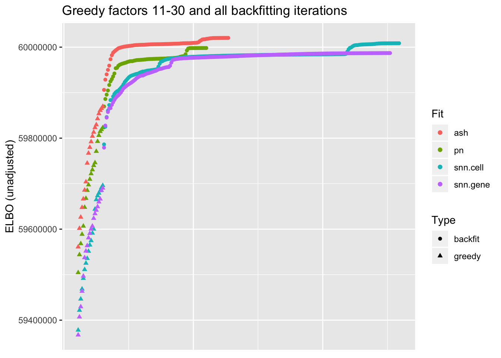
I line up the point-normal and scale-mixture-of-normal factors so that similar factors are shown one on top of the other. Results are similar, but there are intriguing differences in some of the later factors. The scale-mixture-of-normal fit has an additional ciliated-specific factor that looks especially promising.
pn.v.ash <- compare.factors(res$pn$fl, res$ash$fl)
plot.factors(res$pn, droplet$cell.type, 1:15,
title = "Point-normal priors (factors 1-15)")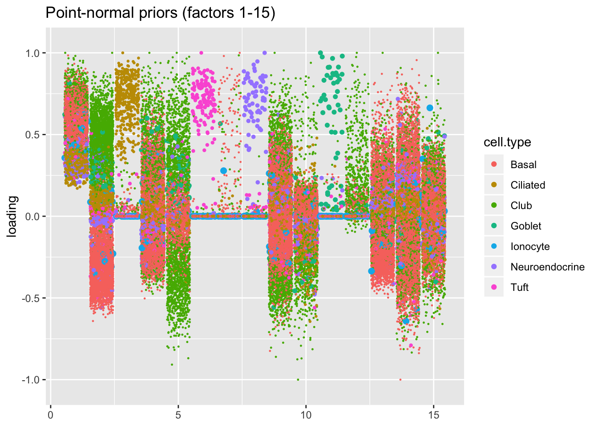
plot.factors(res$ash, droplet$cell.type, pn.v.ash$fl2.k[1:15],
title = "Scale mixtures of normals (factors 1-15)")
plot.factors(res$pn, droplet$cell.type, 16:30,
title = "Point-normal priors (factors 16-30)")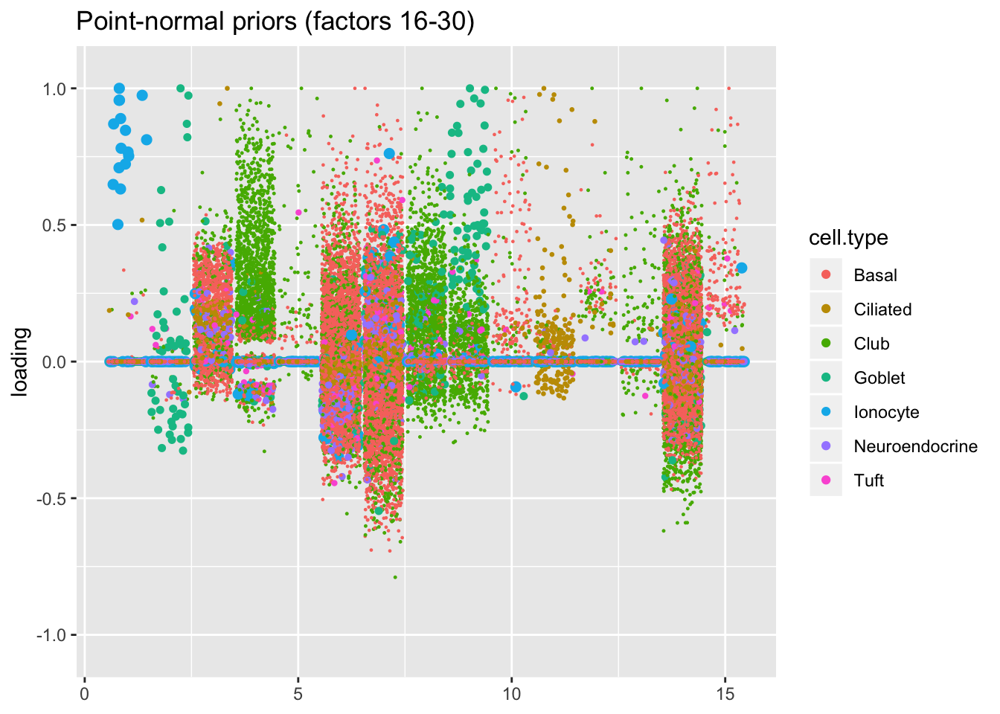
plot.factors(res$ash, droplet$cell.type, pn.v.ash$fl2.k[16:30],
title = "Scale mixtures of normals (factors 16-30)")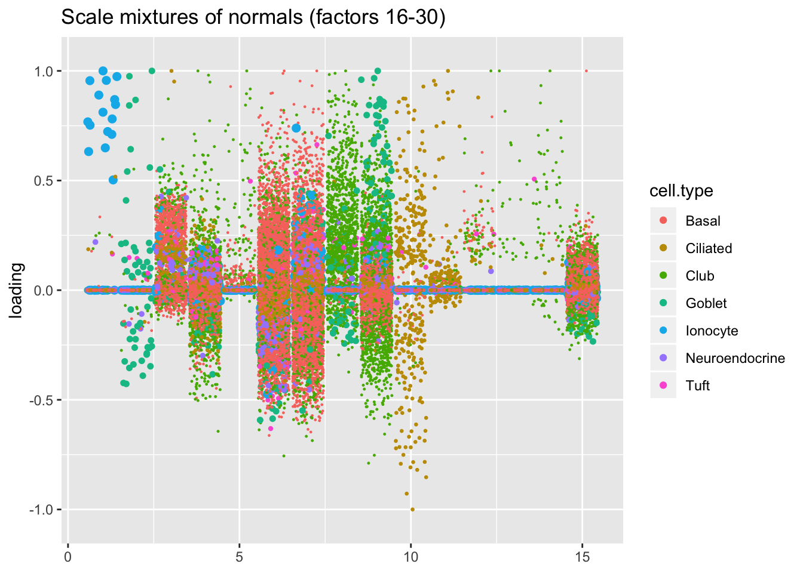
For ease of comparison, I only consider the semi-nonnegative fit that puts nonnegative priors on gene loadings. As above, I line up similar factors. I denote a semi-nonnegative factor as “similar” to a point-normal factor if the gene loadings are strongly correlated (\(r \ge 0.7\)) with either the positive or the negative component of the point-normal gene loadings. Thus a single point-normal factor can be similar to more than one semi-nonnegative factor (and vice versa).
cor.thresh <- 0.7
pn.pos <- pmax(res$pn$fl$loadings.pm[[2]], 0)
pn.pos <- t(t(pn.pos) / apply(pn.pos, 2, function(x) sqrt(sum(x^2))))
pos.cor <- crossprod(res$snn.gene$fl$loadings.pm[[2]], pn.pos)
pn.neg <- -pmin(res$pn$fl$loadings.pm[[2]], 0)
pn.neg <- t(t(pn.neg) / apply(pn.neg, 2, function(x) sqrt(sum(x^2))))
pn.neg[, 1] <- 0
neg.cor <- crossprod(res$snn.gene$fl$loadings.pm[[2]], pn.neg)
is.cor <- (pmax(pos.cor, neg.cor) > cor.thresh)
pn.matched <- which(apply(is.cor, 2, any))
snn.matched <- unlist(lapply(pn.matched, function(x) which(is.cor[, x])))
# Duplicate factors where need be.
pn.matched <- rep(1:res$pn$fl$n.factors, times = apply(is.cor, 2, sum))
plot.factors(res$pn, droplet$cell.type,
pn.matched, title = "Point-normal (matched factors)")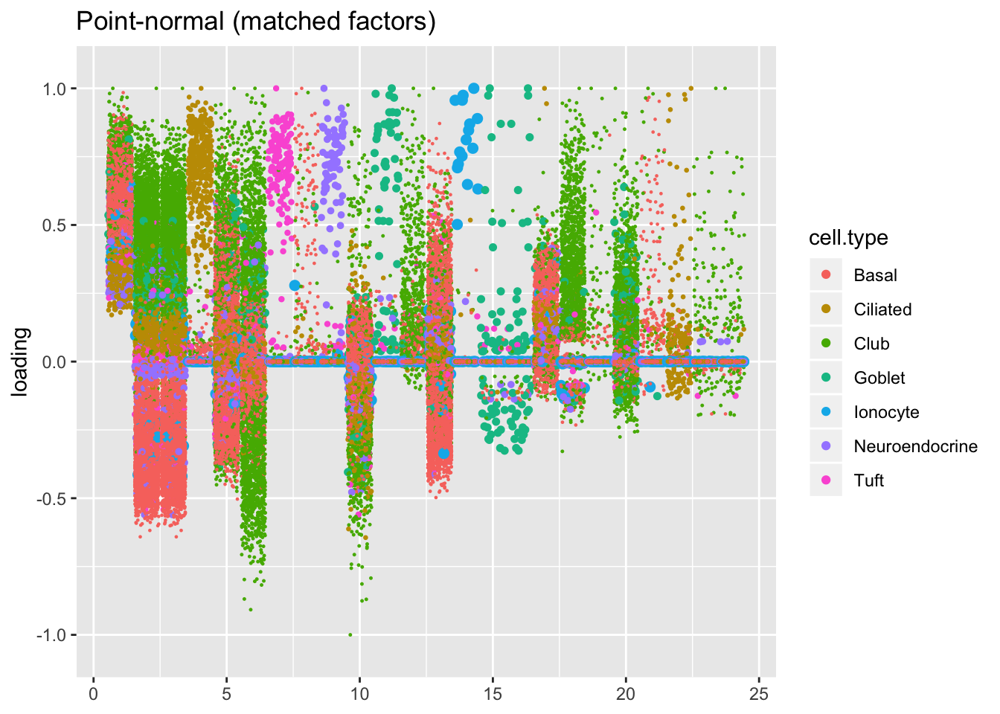
plot.factors(res$snn.gene, droplet$cell.type,
snn.matched, title = "Semi-nonnegative (matched factors)")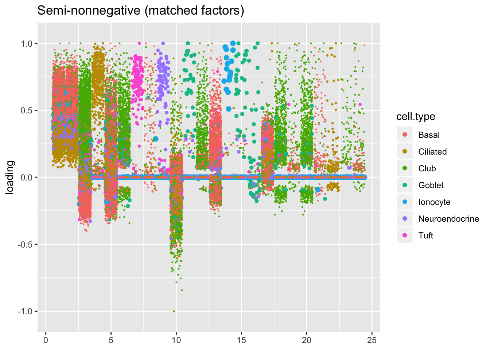
The remaining factors do not have counterparts.
snn.unmatched <- setdiff(1:res$snn.gene$fl$n.factors, snn.matched)
pn.unmatched <- setdiff(1:res$pn$fl$n.factors, pn.matched)
plot.factors(res$pn, droplet$cell.type,
pn.unmatched, title = "Point-normal (unmatched factors)")
plot.factors(res$snn.gene, droplet$cell.type,
snn.unmatched, title = "Semi-nonnegative (unmatched factors)")
Both the point-normal fit and the fit with nonnegative priors on genes yield two goblet factors. The point-normal fit gives us one factor (11) that identifies goblet cells and another factor (16) that discriminates between goblet-1 cells (positive loadings) and goblet-2 cells (negative loadings). In contrast, the semi-nonnegative fit gives us a factor that identifies goblet cells and a factor that further delimits goblet-2 cells; to get the goblet-1 gene set, one would need to “subtract” the goblet-2 loadings from the generic goblet loadings. So, although I claimed above that semi-nonnegative fits ought to be more interpretable, the point-normal fit is in fact easier to interpret here.
The relevant gene sets are plotted below. Genes that Montoro et al. identify as more highly expressed in goblet-1 cells are in blue, while genes that express more highly in goblet-2 cells are in red.
plot.one.factor(res$pn$fl, pn.matched[11], droplet$all.goblet.genes,
title = "Point-normal, Factor 11",
invert = TRUE, gene.colors = droplet$all.goblet.colors)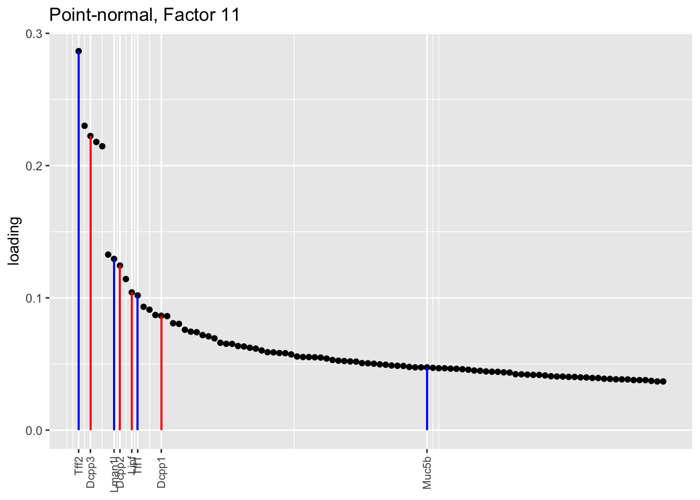
plot.one.factor(res$pn$fl, pn.matched[16], droplet$all.goblet.genes,
title = "Point-normal, Factor 16 (positive component)",
invert = FALSE, gene.colors = droplet$all.goblet.colors)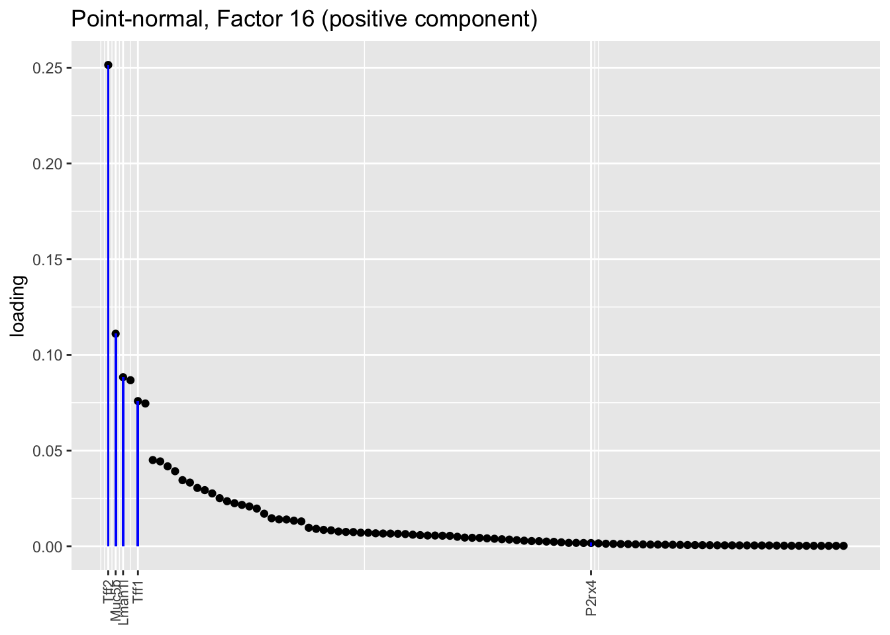
plot.one.factor(res$pn$fl, pn.matched[16], droplet$all.goblet.genes,
title = "Point-normal, Factor 16 (negative component)",
invert = TRUE, gene.colors = droplet$all.goblet.colors)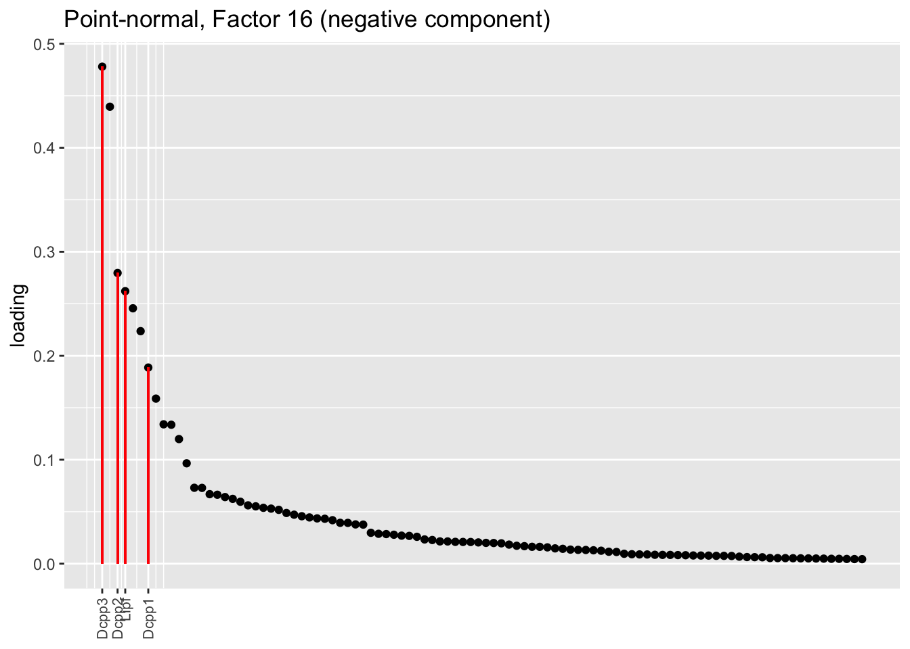
plot.one.factor(res$snn.gene$fl, snn.matched[11], droplet$all.goblet.genes,
title = "Semi-nonnegative, Factor 11",
gene.colors = droplet$all.goblet.colors)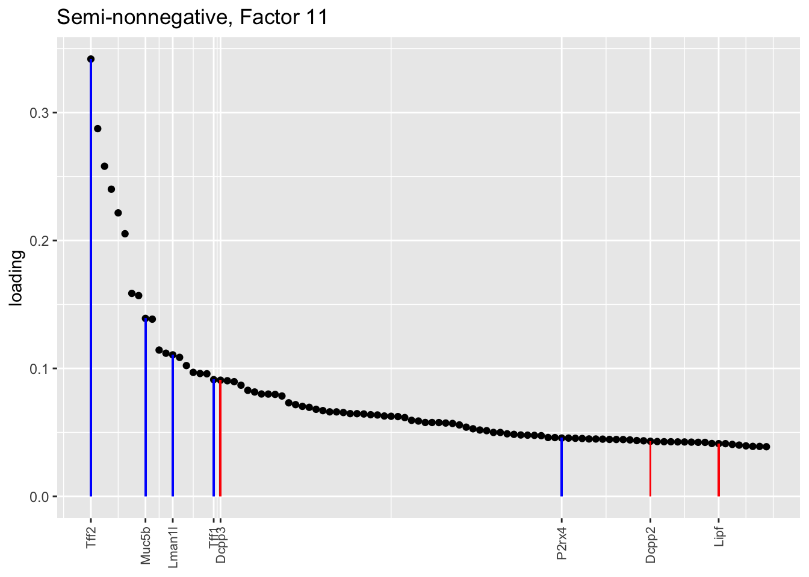
plot.one.factor(res$snn.gene$fl, snn.matched[16], droplet$all.goblet.genes,
title = "Semi-nonnegative, Factor 16",
gene.colors = droplet$all.goblet.colors)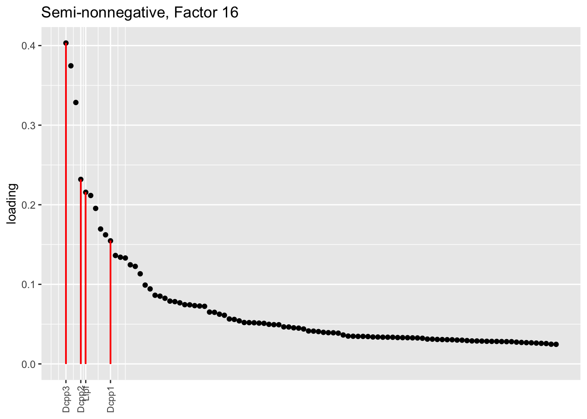
Each of these prior families has value. For a quick and dirty fit, one might consider using point-normal priors and performing a small number of backfitting iterations (\(\approx 10\)). For a more refined fit, scale-mixture-of-normal priors are guaranteed to produce a better fit than point-normal priors and are nearly as fast.
The semi-nonnegative fits are slow to fit and, as the goblet factors example shows, they’re not guaranteed to be any more interpretable than the point-normal or scale-mixture-of-normal fits; still, I find them to be both philosophically and aesthetically appealing.
sessionInfo()R version 3.5.3 (2019-03-11)
Platform: x86_64-apple-darwin15.6.0 (64-bit)
Running under: macOS Mojave 10.14.6
Matrix products: default
BLAS: /Library/Frameworks/R.framework/Versions/3.5/Resources/lib/libRblas.0.dylib
LAPACK: /Library/Frameworks/R.framework/Versions/3.5/Resources/lib/libRlapack.dylib
locale:
[1] en_US.UTF-8/en_US.UTF-8/en_US.UTF-8/C/en_US.UTF-8/en_US.UTF-8
attached base packages:
[1] stats graphics grDevices utils datasets methods base
other attached packages:
[1] flashier_0.1.15 ggplot2_3.2.0 Matrix_1.2-15
loaded via a namespace (and not attached):
[1] Rcpp_1.0.1 plyr_1.8.4 highr_0.8
[4] compiler_3.5.3 pillar_1.3.1 git2r_0.25.2
[7] workflowr_1.2.0 iterators_1.0.10 tools_3.5.3
[10] digest_0.6.18 evaluate_0.13 tibble_2.1.1
[13] gtable_0.3.0 lattice_0.20-38 pkgconfig_2.0.2
[16] rlang_0.3.1 foreach_1.4.4 parallel_3.5.3
[19] yaml_2.2.0 ebnm_0.1-24 xfun_0.6
[22] withr_2.1.2 stringr_1.4.0 dplyr_0.8.0.1
[25] knitr_1.22 fs_1.2.7 rprojroot_1.3-2
[28] grid_3.5.3 tidyselect_0.2.5 glue_1.3.1
[31] R6_2.4.0 rmarkdown_1.12 mixsqp_0.1-119
[34] reshape2_1.4.3 ashr_2.2-38 purrr_0.3.2
[37] magrittr_1.5 whisker_0.3-2 MASS_7.3-51.1
[40] codetools_0.2-16 backports_1.1.3 scales_1.0.0
[43] htmltools_0.3.6 assertthat_0.2.1 colorspace_1.4-1
[46] labeling_0.3 stringi_1.4.3 pscl_1.5.2
[49] doParallel_1.0.14 lazyeval_0.2.2 munsell_0.5.0
[52] truncnorm_1.0-8 SQUAREM_2017.10-1 crayon_1.3.4